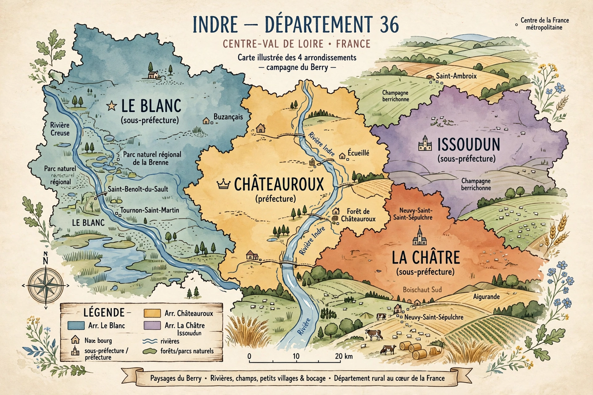

The four arrondissements of the Indre department are administrative divisions of the department in the Centre-Val de Loire region of France. Each is headed by a subprefect and groups a number of communes.

| Arrondissement | Capital | Notes |
|---|---|---|
| Le Blanc | Le Blanc | West of the department |
| Châteauroux | Châteauroux | Contains the prefecture, Châteauroux |
| La Châtre | La Châtre | South-east |
| Issoudun | Issoudun | North-east |
The arrondissements were created in 1800. Their boundaries were adjusted in the nationwide rearrangement effective 1 January 2017, which transferred communes between arrondissements in Indre to better match intercommunal boundaries, and again in minor later decrees.